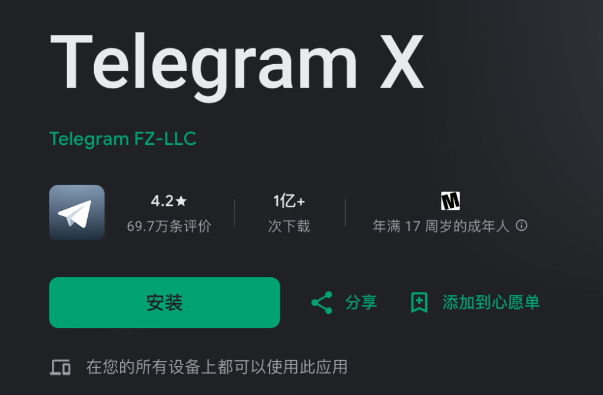

怎么查看自己的电报ID？
要查看自己的Telegram ID，你可以使用第三方机器人，如 @userinfobot。在Telegram中向这个机器人发送一条消息，它将自动回复你的Telegram用户ID。请注意，Telegram本身不直接显示用户ID。
使用第三方机器人查询Telegram ID
如何使用 @userinfobot 查找ID
- 启动对话：在Telegram中，搜索 @userinfobot，并开始与之对话。点击“Start”或直接发送一条消息来激活机器人。
- 接收你的ID信息：在与 @userinfobot 的交互中，机器人会自动回复你的Telegram ID信息。这条信息通常包括你的用户名、ID和一些基本的账户信息。
- 使用返回的ID：获取到你的Telegram ID后，你可以用它进行需要ID的操作，如设置API或加入需要ID验证的群组。
其他推荐的ID查询机器人
- @get_id_bot：这是另一个流行的机器人，用于快速获取你的Telegram用户ID。同样地，只需向这个机器人发送一条消息，它就会回复你的用户ID。
- @myidbot：My Telegram ID机器人，它提供了一种简便的方法来查看你的Telegram ID及其他账户相关信息。这个机器人还可以帮助你了解你的聊天ID或群组ID。
- @ShowJsonBot：这个机器人提供了一个更技术性的方法来查看你的Telegram信息，它显示的是包括ID在内的账户信息的JSON格式。适用于开发者和高级用户，需要对Telegram API有一定了解。
了解Telegram ID的重要性
为什么你需要知道自己的Telegram ID
- 个人身份识别：Telegram ID是一个独一无二的数字，用于在Telegram网络中识别每一个用户。知道自己的ID可以帮助你在需要进行个人身份确认的情况下提供正确的信息。
- 方便联系和邀请：有时，其他用户可能需要你的Telegram ID来添加你为联系人，尤其是在用户名不可用或重复时。ID可以提供一种更直接和确保正确的联系方式。
- 自定义和自动化工具使用：许多第三方工具和自动化脚本要求用户提供Telegram ID以进行设置和管理，特别是在进行开发相关的操作时。
Telegram ID在安全验证中的作用
- 增强账户安全：Telegram ID可用于增强账户的安全性，例如在设置双因素认证或恢复账户时，你可能需要提供你的ID作为身份验证的一部分。
- 管理API密钥：开发者在使用Telegram API进行机器人开发或集成其他服务时，通常需要用到用户ID来关联和管理API密钥，确保只有授权的用户和应用能够访问相关数据。
- 过滤和权限管理：在群组或大型聊天中，管理员可以利用用户ID来设置特定的权限或进行消息过滤，防止垃圾信息和滥用行为，这对于维护群组的健康环境尤其重要。
Telegram设置与隐私保护
如何通过设置管理你的Telegram账户
- 访问设置面板：在Telegram应用中，点击底部菜单栏的“设置”图标，这里包含了所有相关的账户设置选项，从个人信息到隐私控制等。
- 更新账户信息：在设置菜单中，你可以更新你的个人信息，如更改用户名、电话号码或添加头像。这些基本设置帮助你维护账户的当前性和适用性。
- 配置隐私和安全设置：Telegram提供了广泛的隐私和安全选项，包括谁可以看到你的电话号码、最后上线时间以及设置消息加密选项。定期审查这些设置以确保它们符合你的隐私需求。
保护个人信息和隐私的策略
- 启用两步验证：为你的Telegram账户设置两步验证是保护账户安全的重要步骤。这需要你在登录时除了输入密码外，还需输入一个通过其他方式（如短信或应用）获取的一次性代码。
- 控制消息可见性：在“隐私和安全”设置中，你可以控制哪些用户可以将你加为联系人、谁可以看到你的电话号码以及你的在线状态。这有助于减少不必要的联系和保护你的在线隐私。
- 管理会话和数据存储：Telegram允许用户设定自动销毁的聊天，这意味着消息在一定时间后会自动从双方设备中删除。此外，检查你的聊天备份设置，确保没有敏感数据被存储在云端。

与Telegram ID相关的常见问题
解决无法获取ID的问题
- 检查网络连接：首先确保你的设备连接到互联网。网络连接不稳定或中断可能会阻止Telegram应用正常访问服务器来检索ID。
- 使用正确的机器人：确认你使用了正确的机器人来查询ID，如@userinfobot。输入“/start”以激活机器人，然后按照提示操作来获取你的ID。
- 更新Telegram应用：如果你的Telegram应用版本过旧，可能无法支持某些功能。确保你的应用是最新版本，这可以通过访问应用商店并检查更新来完成。
ID被冒用时的应对策略
- 修改账户信息：如果你怀疑你的Telegram ID被冒用，立即更新你的账户信息，包括更改密码和启用两步验证，以增加账户的安全层级。
- 联系Telegram支持：向Telegram官方支持团队报告你的ID被冒用的情况。提供必要的信息，如你的联系方式和账户被冒用的具体详情，以便他们可以帮助你解决问题。
- 警告联系人：通知你的联系人你的ID可能已被冒用，并告诉他们不要响应任何看似来自你但实际上可疑或不寻常的消息。这可以防止骗局的进一步扩散。
Telegram ID与账户管理
如何通过Telegram ID管理多个设备
- 同步设备登录：通过你的Telegram ID，你可以在多个设备上登录同一个账户。这允许你在手机、平板、电脑等设备上同步接收和发送消息。
- 查看活跃设备：在设置中选择“设备”或“活动会话”，你可以查看所有使用你的Telegram ID登录的设备列表。这里展示了每个设备的登录时间和位置，让你轻松管理。
- 结束不必要的会话：如果发现某些设备不应再使用你的账户，你可以直接在同一菜单中选择“结束该会话”。这样做可以提高账户安全，防止未授权访问。
ID与账户恢复的关系
- 使用ID快速恢复：在你忘记账户访问信息如密码时，Telegram ID可以帮助快速识别并恢复你的账户。这在与客服联系时尤其有用，提供ID可以快速定位你的账户详情。
- 重设密码：如果需要重置密码，系统可能会要求你提供Telegram ID，以确认账户所有权。在某些情况下，这是恢复账户访问的必要步骤。
- 提高恢复效率：有Telegram ID，账户恢复过程更为高效。ID的独特性确保了在多个用户请求中，你的账户可以被准确地识别和处理。
为什么需要知道自己的Telegram ID？
知道自己的Telegram ID有助于进行账户管理、设定API或参与需要特定身份验证的群组。它是一个独特的标识符，用于各种需要识别用户身份的场合。
在哪里可以使用Telegram ID？
Telegram ID主要用于身份验证和开发者API访问。它可以帮助用户加入私有群组、设置机器人或在进行技术开发时管理不同的服务接口。
如何确保在查找Telegram ID时的安全性？
确保通过可信的第三方机器人如@userinfobot来查询你的Telegram ID，避免使用不明来源的机器人或服务，以防止数据泄露或其他安全风险。
Telegram中文 其他新闻

telegram x怎么下载？
您可以通过以下方式下载Telegram X：Android设备：在Google Play商店搜索“Tel […]
2025 年 04 月 12 日
Telegram只能用短信登录吗？
不，Telegram 不仅可以使用短信验证码登录，还支持使用其他方法，如电话呼叫接收验证码或通过已登录设备进行 […]
2024 年 07 月 28 日
Telegram如何在新设备登录？
要在新设备上登录Telegram，请打开Telegram应用并选择“开始聊天”。输入你的手机号码后，Teleg […]
2024 年 07 月 26 日
Telegram如何退出其他设备？
在Telegram中退出其他设备，按以下步骤操作：打开Telegram，进入“设置”。点击“设备”选项，查看已 […]
2025 年 03 月 19 日